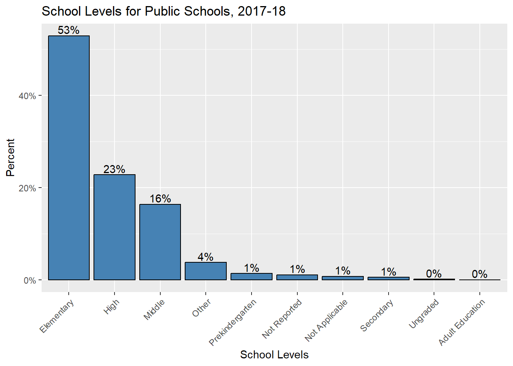

library(tidyverse)
library(ggplot2)
library(readr)
library(dplyr)
knitr::opts_chunk$set(echo = TRUE, warning=FALSE, message=FALSE)Challenge 5: Public School Characteristics
challenge_5
Teresa Lardo
public_schools
Creating uni- and bivariate visualizations
Read in data
For this challenge, I will read in the data set on Public School characteristics.
public_schools <- read_csv("_data/Public_School_Characteristics_2017-18.csv", show_col_types = FALSE)Briefly describe the data
The data set describes characteristics of just under 101,000 public schools in the United States. The variables include location information (latitude, longitude, state, school district, street address, zip code, etc.), contact information, whether or not the school is virtual, number of students per grade level, racial and ethnic background data for students, student/teacher ratio, and more.
head(public_schools)# A tibble: 6 × 79
X Y OBJECTID NCESSCH NMCNTY SURVYEAR STABR LEAID ST_LEAID LEA_NAME
<dbl> <dbl> <dbl> <chr> <chr> <chr> <chr> <chr> <chr> <chr>
1 -149. 61.6 1 0200510004… Matan… 2017-20… AK 0200… AK-33 Matanus…
2 -157. 71.3 2 0200610004… North… 2017-20… AK 0200… AK-36 North S…
3 -151. 60.5 3 0200390004… Kenai… 2017-20… AK 0200… AK-24 Kenai P…
4 -151. 60.6 4 0200390004… Kenai… 2017-20… AK 0200… AK-24 Kenai P…
5 -151. 60.6 5 0200390005… Kenai… 2017-20… AK 0200… AK-24 Kenai P…
6 -133. 56.1 6 0200700005… Princ… 2017-20… AK 0200… AK-44 Southea…
# ℹ 69 more variables: SCH_NAME <chr>, LSTREET1 <chr>, LSTREET2 <chr>,
# LSTREET3 <lgl>, LCITY <chr>, LSTATE <chr>, LZIP <chr>, LZIP4 <chr>,
# PHONE <chr>, GSLO <chr>, GSHI <chr>, VIRTUAL <chr>, TOTFRL <dbl>,
# FRELCH <dbl>, REDLCH <dbl>, PK <dbl>, KG <dbl>, G01 <dbl>, G02 <dbl>,
# G03 <dbl>, G04 <dbl>, G05 <dbl>, G06 <dbl>, G07 <dbl>, G08 <dbl>,
# G09 <dbl>, G10 <dbl>, G11 <dbl>, G12 <dbl>, G13 <lgl>, TOTAL <dbl>,
# MEMBER <dbl>, AM <dbl>, HI <dbl>, BL <dbl>, WH <dbl>, HP <dbl>, TR <dbl>, …dim(public_schools)[1] 100729 79Tidy Data
Problems() and Changing Data Types
When I originally read the csv file in, I got a warning message that said to call problems() for more information.
problems(public_schools)# A tibble: 110 × 5
row col expected actual file
<int> <int> <chr> <chr> <chr>
1 15701 73 1/0/T/F/TRUE/FALSE 184 C:/Users/Peregrine/Documents/601_Spr…
2 15823 73 1/0/T/F/TRUE/FALSE 224 C:/Users/Peregrine/Documents/601_Spr…
3 21611 14 1/0/T/F/TRUE/FALSE Room 121 C:/Users/Peregrine/Documents/601_Spr…
4 44514 40 1/0/T/F/TRUE/FALSE 48 C:/Users/Peregrine/Documents/601_Spr…
5 44518 40 1/0/T/F/TRUE/FALSE 59 C:/Users/Peregrine/Documents/601_Spr…
6 44522 40 1/0/T/F/TRUE/FALSE 24 C:/Users/Peregrine/Documents/601_Spr…
7 44524 40 1/0/T/F/TRUE/FALSE 30 C:/Users/Peregrine/Documents/601_Spr…
8 44530 40 1/0/T/F/TRUE/FALSE 21 C:/Users/Peregrine/Documents/601_Spr…
9 44536 40 1/0/T/F/TRUE/FALSE 22 C:/Users/Peregrine/Documents/601_Spr…
10 44537 40 1/0/T/F/TRUE/FALSE 29 C:/Users/Peregrine/Documents/601_Spr…
# ℹ 100 more rowsI used print(problems(public_schools), n = nrow(problems(public_schools))) and got a list of 110 issues, which all occurred in columns 14, 40, and 73. Boolean values were expected for these columns, while the actual values were often numbers or character strings. The data type of these three columns will need to be changed.
# Change Column 14 (LSTREET3) from logical to character type
public_schools$LSTREET3 <- as.character(as.logical(public_schools$LSTREET3))
# Change Column 40 (G13) from logical to numeric type
public_schools$G13 <- as.numeric(as.logical(public_schools$G13))
# Change Column 73 (AE) from logical to numeric type
public_schools$AE <- as.numeric(as.logical(public_schools$AE))Let’s check the data types for these columns to make sure our changes went through as intended. We’re expecting LSTREET3 column to have a character type and the other two columns to have numeric types.
class(public_schools$LSTREET3)[1] "character"class(public_schools$G13)[1] "numeric"class(public_schools$AE)[1] "numeric"Hurray!
Removing Repetitive Data
This data set includes a column for the survey year, which suggests that this data was taken from a longer set that includes data from different survey years. However, this set is only from one survey year, as we can see from running the unique() function for that column:
unique(public_schools$SURVYEAR)[1] "2017-2018"As this “variable” does not vary at all in our data, we can remove this from the data set.
# Remove Survey Year column
public_schools <- public_schools %>%
select(-SURVYEAR)The data set also contains two sets of columns containing the latitude and longitudinal coordinates for the schools - columns X and Y as well as columns LATCOD and LONCOD. We can remove one set of these repetitive columns without losing any unique information.
# Remove columns X and Y
public_schools <- public_schools %>%
select(-c(X, Y))Let’s get a quick view of our data set to make sure these 3 columns have been removed:
head(public_schools)# A tibble: 6 × 76
OBJECTID NCESSCH NMCNTY STABR LEAID ST_LEAID LEA_NAME SCH_NAME LSTREET1
<dbl> <chr> <chr> <chr> <chr> <chr> <chr> <chr> <chr>
1 1 020051000480 Matanus… AK 0200… AK-33 Matanus… John Sh… 3750 E …
2 2 020061000470 North S… AK 0200… AK-36 North S… Kiita L… 5246 Ka…
3 3 020039000448 Kenai P… AK 0200… AK-24 Kenai P… Soldotn… 158 E P…
4 4 020039000463 Kenai P… AK 0200… AK-24 Kenai P… Kaleido… 549 N F…
5 5 020039000513 Kenai P… AK 0200… AK-24 Kenai P… Maratho… 405 Mar…
6 6 020070000526 Prince … AK 0200… AK-44 Southea… Whale P… 126 Bay…
# ℹ 67 more variables: LSTREET2 <chr>, LSTREET3 <chr>, LCITY <chr>,
# LSTATE <chr>, LZIP <chr>, LZIP4 <chr>, PHONE <chr>, GSLO <chr>, GSHI <chr>,
# VIRTUAL <chr>, TOTFRL <dbl>, FRELCH <dbl>, REDLCH <dbl>, PK <dbl>,
# KG <dbl>, G01 <dbl>, G02 <dbl>, G03 <dbl>, G04 <dbl>, G05 <dbl>, G06 <dbl>,
# G07 <dbl>, G08 <dbl>, G09 <dbl>, G10 <dbl>, G11 <dbl>, G12 <dbl>,
# G13 <dbl>, TOTAL <dbl>, MEMBER <dbl>, AM <dbl>, HI <dbl>, BL <dbl>,
# WH <dbl>, HP <dbl>, TR <dbl>, FTE <dbl>, LATCOD <dbl>, LONCOD <dbl>, …Mutation
The ULOCALE variable in this data set lists 12 different settings, including “Rural: Fringe,” “Town: Remote,” “City: Mid-size,” and “Suburb: Large.” I’d like to use mutate() to create a column that categorizes each school into a smaller number of possible environments - simply Rural, Town, City, and Suburb.
public_schools <- public_schools %>%
mutate(ENVIRONMENT = case_when(ULOCALE %in% c("11-City: Large", "12-City: Mid-size", "13-City: Small") ~ "City",
ULOCALE %in% c("21-Suburb: Large", "22-Suburb: Mid-size", "23-Suburb: Small") ~ "Suburb",
ULOCALE %in% c("31-Town: Fringe", "32-Town: Distant", "33-Town: Remote") ~ "Town",
ULOCALE %in% c("41-Rural: Fringe", "42-Rural: Distant", "43-Rural: Remote") ~ "Rural"))Univariate Visualizations
School Levels
I’d like to get a look at which levels of school (elementary, middle, etc.) are most represented in the data set. I want to try out a treemap for this to get a quick, visual sense of the proportion of each type of school level within the data set.
# Create a data source to store the counts by School Level
levels <- public_schools %>%
count(SCHOOL_LEVEL)
# Load treemapify from library
library(treemapify)
# Create a treemap
ggplot(levels,
aes(fill = SCHOOL_LEVEL,
area = n,
label = SCHOOL_LEVEL)) +
geom_treemap() +
geom_treemap_text(colour = "black",
place = "centre") +
labs(title = "Public Schools by Level") +
theme(legend.position = "none")
This tree map shows that most of the schools in this data set are elementary schools - it looks like more than half of the schools are elementary level. We can also look into more exact percentages for these school levels by using a bar chart:
library(scales)
# Create data source for School Level counts and percentages
level_perc <- public_schools %>%
count(SCHOOL_LEVEL) %>%
mutate(pct = n / sum(n),
pctlabel = paste0(round(pct*100), "%"))
# Create a bar chart showing the percentages of each level of school
ggplot(level_perc,
aes(x = reorder(SCHOOL_LEVEL, -pct),
y = pct)) +
geom_bar(stat = "identity",
fill = "steelblue",
color = "black") +
geom_text(aes(label = pctlabel),
vjust = -0.25) +
scale_y_continuous(labels = percent) +
labs(x = "School Levels",
y = "Percent",
title = "School Levels for Public Schools, 2017-18") +
theme(axis.text.x = element_text(angle = 45,
hjust = 1))
This bar chart confirms that the percentage of elementary schools within our data set is slightly over half. Compared to the tree map, the bar chart also has much more readable labels for the less represented school levels.
Operational Status
The data set includes a column displaying the operational status of each school. Let’s use a bar chart to get a sense of how many schools of each status are in our data set. I’ll use coord_flip() to make this a horizontal bar chart for the sake of reading each operational status label more easily.
ggplot(public_schools, aes(x = SY_STATUS_TEXT)) +
geom_bar(fill = "hotpink",
color = "black") +
labs(title="Status of Public Schools, 2017-18",
x = "Operational Status") +
coord_flip()
Our horizontal bar chart shows that by far most of the schools in our data set were currently operational when the data was collected.
Bivariate Visualizations
Total Students in Towns, Cities, Suburbs, & Rural Areas
Let’s create a visualization to show the total number of public school students by school environment (city, rural, suburb, and town).
ggplot(public_schools, aes(x=ENVIRONMENT, y=TOTAL)) +
geom_bar(stat = "identity", color="darkgreen", width=0.45) +
xlab("Environment of Public Schools") + ylab("Total Number of Students") +
ggtitle("Total Public School Students by Environment Type")
This visualization shows that the environment with the most public school students overall is the suburbs, with the city pulling in second. Town has the lowest number of total public school students, which makes me curious how “town” is defined for this data set.
Student-Teacher Ratios in Virtual/Non-Virtual Schools
As this data set has a variable on virtual versus non-virtual status of the schools, I’m curious to look into some of the data on virtual public schools. However, when I filtered the data set down to only virtual schools, the result was a relatively small portion of our total data. So I want to compare the virtual and non-virtual schools in terms of student-teacher ratios to see if there is any noticeable difference to be seen (beyond there being much fewer numbers of virtual schools overall).
I will use a scatterplot in the interest of seeing where most data points gather and where more outlying points appear.
# Filter out the N/A & Missing values from the VIRTUAL variable
public_schools <- public_schools %>%
filter(VIRTUAL == c("A virtual school", "Not a virtual school"))
# Student Teacher Ratios at Virtual & Non-Virtual Schools
ggplot(public_schools,
aes(y = factor(VIRTUAL,
labels = c("Virtual School", "Non-virtual School")),
x = STUTERATIO,
color = VIRTUAL)) +
geom_jitter(alpha = 0.7,
size = 1.5) +
scale_x_continuous() +
labs(title = "Student-Teacher Ratios for Virtual & Non-Virtual Public Schools",
x = "Number of Students Per Teacher",
y = "Types of Schools") +
theme_minimal() +
theme(legend.position = "none")
This scatterplot shows that the student-teacher ratios for both virtual and non-virtual public schools fall below 125 students per teacher. The plot captures an outlying data point for one of the non-virtual schools where the student-teacher ratio is nearing 25000 students to a teacher. That seems likely to be an error in the data.
I’m interested in seeing a close-up view of the most common student-teacher ratios, so I’m going to filter out the higher student-teacher ratios and concentrate on the data points that fall below 100.
# Filter out higher STR from our data set to use in a new version of the plot above
public_schools <- public_schools %>%
filter(STUTERATIO < 100)
# Student Teacher Ratios at Virtual & Non-Virtual Schools
ggplot(public_schools,
aes(y = factor(VIRTUAL,
labels = c("Virtual School", "Non-virtual School")),
x = STUTERATIO,
color = VIRTUAL)) +
geom_jitter(alpha = 0.7,
size = 1.5) +
scale_x_continuous() +
labs(title = "Student-Teacher Ratios under 125:1",
x = "Number of Students Per Teacher",
y = "Types of Schools") +
theme_minimal() +
theme(legend.position = "none")
This “zoomed-in” version of the scatterplot shows us that the highest concentration of student-teacher ratios falls between 1 and roughly 30 students per teacher.